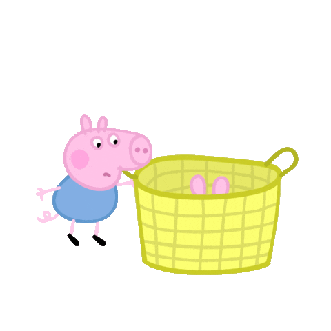
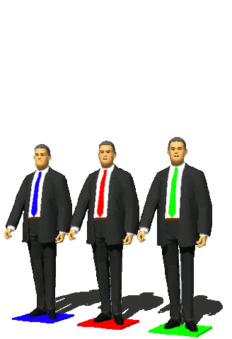
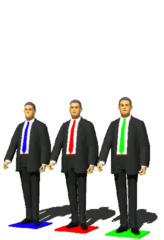

That's
a
question
with
practical
importance,
as
randomness
is
surprisingly 
useful.
Following
no
laws,
random
numbers
lack
any
predictability,
so
when
added
to
text
they
garble
it
in
a
way
that
no
one
can
unscramble
without
knowing
what
numbers
were
added
to
encrypt  them.
Randomness
is
also
useful
in
simulating
the
effects
of
chance
on
complex
them.
Randomness
is
also
useful
in
simulating
the
effects
of
chance
on
complex  systems
like
stock 
market,
and
for
selecting
representative
samples
of
patients
when
testing
new
drugs.
systems
like
stock 
market,
and
for
selecting
representative
samples
of
patients
when
testing
new
drugs.